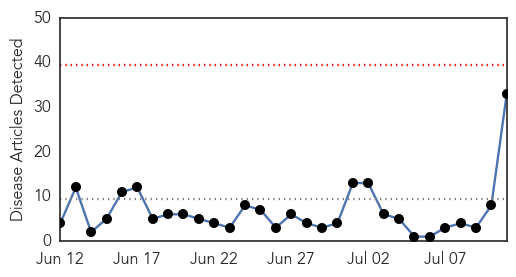
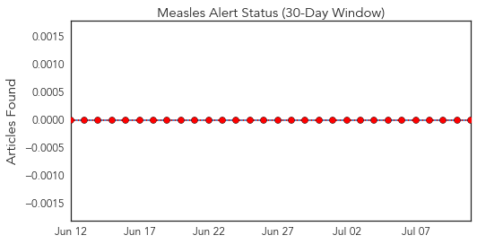
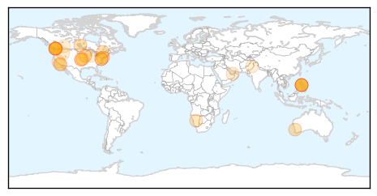
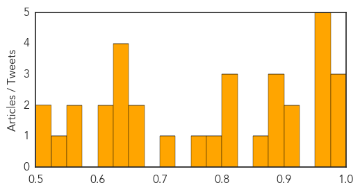

Measles
30-Day Web Trend
0 alerts, 0 warnings

30-Day Twitter Trend
0 alerts, 0 warnings

Article Locations
Article Confidences
Top Articles:
- 0.996
- Why are Canadian measles outbreaks so much larger than U.S. outbreaks?
- 0.980
- BCIT student sick with measles from Fraser Valley outbreak
- 0.978
- Measles 'early and active' in U.S.
- 0.970
- Manitoba measles case prompts warning about exposure at strip bar
- 0.963
- Never mind SARS or MERS, worry about measles: Commentary
- 0.958
- 100 measles cases reported in Fraser Valley outbreak
- 0.958
- More Suspected Cases In Regina Area, Officials Urge Shots
- 0.956
- Measles outbreaks prompt health officials to remind people to get vaccinated
- 0.915
- B.C. measles outbreak reveals vulnerability of unvaccinated children
- 0.900
- 8th Manitoba measles case has officials warning of exposure at strip bar
- 0.899
- Hospital measles alert
- 0.899
- Measles outbreaks hit 18-year high in Washington state
- 0.893
- Rash Of Measles Illustrates Importance Of Immunization
- 0.865
- Measles warning for two WA hospitals
- 0.823
- Chickenpox hits young cancer patient, despite vaccination
- 0.804
- Measles spreading in Fraser Valley East
- 0.803
- Measles outbreak in Khomas
- 0.798
- Measles Cases Underscore Importance of Immunization
- 0.772
- Metro Calgary Quotes Anti-Vaccine Homeopath Day After Measles Outbreak Declared
- 0.703
- Infant contracted measles from worker at Wichita restaurant
- 0.674
- Baby has latest case of measles to show up in the Edmonton area
- 0.660
- B.C. government won't force measles vaccination amid outbreak
- 0.645
- More probable measles cases in unimmunized children in Saskatchewan
- 0.640
- Anti-Vaxxers Are Stupid and Contagious
- 0.633
- Measles On Canadian Flight Prompts Health Warning
- 0.626
- 2nd measles case confirmed in Edmonton area
- 0.611
- Measles cases hit 18-year high in Washington state
- 0.600
- Saskatchewan reports measles case in baby whose family arrived by air this month
- 0.554
- IDPs woes: Few doctors willing to volunteer for relief work
- 0.552
- Anti-vaccine message from some naturopaths raises concerns
- 0.547
- Ontario Vaccine Rules Get Tougher For School-Age Kids
- 0.517
- Calgary Measles Cases Keep Unvaccinated Students At Home
- 0.510
- Stop the Fear-Based Propaganda About Vaccines
Top Tweets:
-
No tweets found for Jul 11, 2014
Dengue Fever
30-Day Web Trend
4 alerts, 5 warnings

30-Day Twitter Trend
4 alerts, 0 warnings

Article Locations

Article Confidences

Top Articles:
- 0.995
- Dengue Fever Vaccine May Soon Put an End to Painful Virus
- 0.980
- Illegals bring deadly threat
- 0.974
- Dengue Fever Vaccine Shows Some Promise in Trial
- 0.968
- Dengue threat around the corner as monsoon sets in
- 0.963
- Vaccine breakthrough gives hope to the millions of people at risk of and suffering from dengue fever
- 0.962
- Test vaccine for dengue seen as promising
- 0.950
- Dengue Fever Vaccination Shows Promise
- 0.906
- Third phase trial of dengue vaccine gives promising result
- 0.895
- Dengue Fever Vaccine is Promising in Early Trial
- 0.875
- First dengue vaccine hows promise
- 0.821
- Test vaccine for dengue promising
- 0.800
- Dengue on the rise Neglected areas are ideal places for Aedes to breed - Community
- 0.778
- Fewer dengue cases in Central Visayas for June-July
- 0.773
- Sarawak longhouse chiefs urged to join in anti-dengue fight
- 0.771
- Trial: Dengue shot offers some protection
- 0.769
- Malaysia General Business Sports and Lifestyle News
- 0.769
- Dengue Vaccine Offers Some Protection
- 0.762
- Moderate progress for dengue vaccine as number of cases passes 10,000 mark
- 0.738
- Iqtidar Gilani
- 0.737
- Steps for child, mother health
- 0.635
- Cost-effective solution for Govt - Nation
Top Tweets:
- 0.629
- Yes a vaccine for dengue fever would have a huge positive effect. Currently more than 1 mill. affected each year.